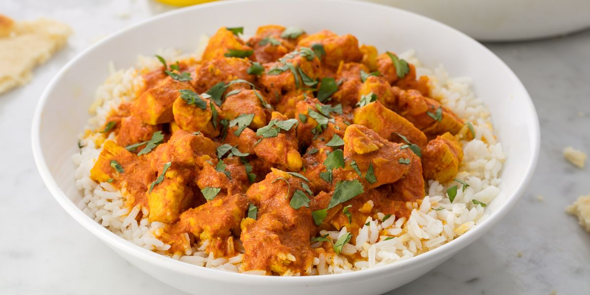

Chicken Curry

A Delicious Dish
I love this curry, super easy and Delicious.
Ingredients
- 2 teaspoons olive oil
- 1/4 of a large white onion
- 2 cloves of garlic minced
- 1 tbsp curry powder
- 1/3 cup broth of choice (I use vegetable)
- 5 small or two large tomatoes (skin removed)
- 1 cup white rice
- 1/2 teaspoon salt
- 1/4 teaspoon black pepper
- 1/8 cayenne pepper
- 1 1/2 cups of chopped cooked chicken
Preparation
- Heat olive oil in a skillet over medium heat
- Add onion and saute for 4-5 min, until translucent. Add garlic and cook for another 30 seconds.
- Stir in curry powder, diced tomatoes, and broth. Season with salt, pepper, and cayenne.
- Bring to a low simmer and cook for 2-3 minutes, until slightly thickened.
- Add chicken and cook until warmed, about 1-2 min.
- Serve on top or mixed with white rice.
- Enjoy!